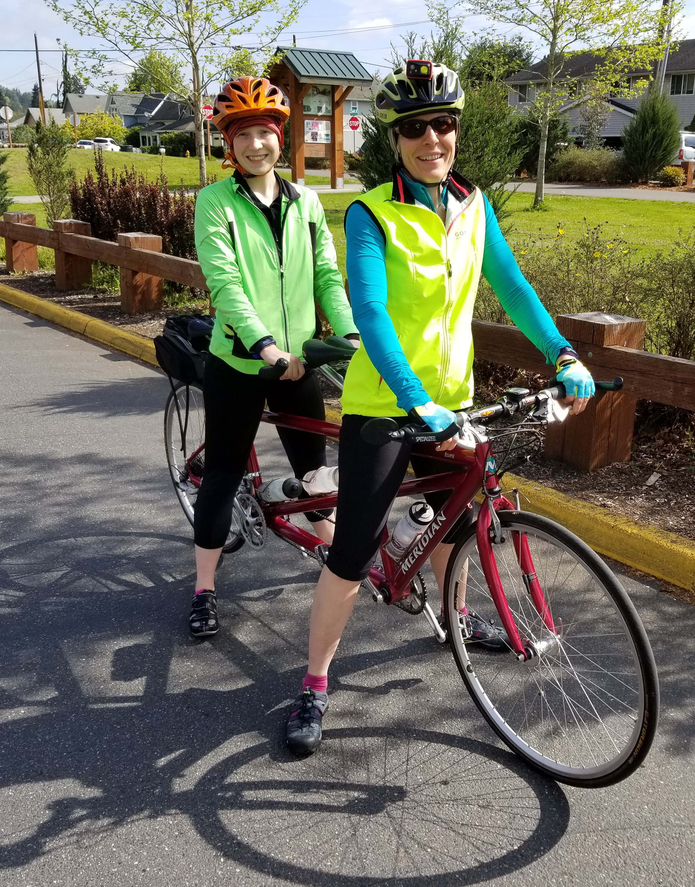

RVT MEMBERS
Faculty Advisor: Lynette H. Bikos, PhD, ABPP
Education: BA, University of Missouri-Columbia, 1987; MA, University of Missouri-Columbia, 1989; PhD, University of Kansas-Lawrence, 1996. At SPU since 2005.
Dr. Lynette Bikos (she/her/hers, pronounced “bike-us”) teaches
statistics, research methods, and psychometrics courses in the Clinical
and Industrial-Organizational Psychology doctoral programs at Seattle
Pacific University. She is a licensed psychologist in Washington and
Kansas and Board Certified in Counseling Psychology. Her scholarship
falls at the intersections of vocational, global, and sustainable
psychology.
At this particular time in SPU’s history, Dr. Bikos has been engaged in advocacy regarding the policies and practices that result in employment discrimination for members of the LGBTQIA+ community. She is PI and co-PI on two studies regarding the campus climate and the sustainability of protest. She has has also been involved in coordinating events designed to cultivate a community that characterized by affirmation and inclusiveness.
Dr. Bikos’ first love is career development. At SPU Dr. Bikos engaged
in both the science and practice of vocational psychology by providing
clinical supervision for the Graduate Career Advisors at SPU’s Center
for Center for Career and Calling and in their work as facilitators for
CALLED! SPU’s Online Field Guide (OFG; Canvas edition).
Dr. Bikos is the PI of a random clinical trial evaluating differences
between three versions of the OFG – particularly looking to see if the
calling-infused version contributes to vocational outcomes
over-and-above adjustment-to-college and traditional-career-planning
versions.
Dr. Bikos is particularly interested in understanding how individuals
respond to change – plotting longitudinal growth trajectories examining
the simultaneous effects of individual and contextual factors.
Significant research projects have explored global learning outcomes in
returnees from study abroad, first year adaptation of expatriate
spouses, and career development in response to the OFG. During the
COVID-19 pandemic, she is investigating experiences of and attitudes
toward making(sewing) and wearing cloth facemasks. Whether in a
videoconference or around a table, planning, implementing, analyzing,
and discovering with her advisees is one of her greatest joys.

Image of Dr. Bikos professional profile photo.
In the larger profession of psychology, Dr. Bikos serves on the
editorial boards of the Journal of Vocational Behavior,
Career Development Quarterly, and International
Perspectives in Psychology: Research, Practice, Consultation; and
has previously served on the Journal of Counseling Psychology
and Journal of Career Development editorial boards. She is a
Fellow in both the American Psychological Association (Division
17/Society of Counseling Psychology; Division 52/International
Psychology) and the Western Psychological Association. She recently
completed a 3-year term (2019-2021) as Vice President for Engagement in
APA’s Division 52/International Psychology.
Dr. Bikos’ commitment to global begins at home. Her family has hosted more than a dozen exchange students (and teachers). She is an avid bicycle commuter, running errands, going to the Y, and riding to-and-from campus (excepting for ice and wind). She also spends a fair amount of time experimenting the kitchen – particularly with international recipes and ingredients.
Additional profiles are provided on the faculty
profile at Seattle Pacific University and at LinkedIn

Current RVT Members
Image of Keyera at a desk.
Keyera Gaulden (she/her/hers, ~27) is from Kitsap County, WA. After high school graduation, she moved to Montana where she competed in track and field for the University of Montana, finding her passion for psychology. She received her Bachelor of Science in Psychology with a minor in Criminal Justice from Washington State University in December 2021. Keyera was admitted to Seattle Pacific University’s Clinical Doctoral program the following year, February 2022. During her undergraduate studies, she researched civil movements for missing and murdered indigenous women, domestic violence as well as the Me Too, and Black Lives Matter movements. Along with research, she was heavily involved in boots-on-the-ground work, protesting, campaigning, and implementing programs for Kitsap County’s only state certified domestic violence agency. The last program implemented prior to grad school is the Recovery Navigator Program (disseminated by Salish Behavioral Health Services Organizations), designed to divert individuals experiencing substance use disorder and co-occurring mental health crisis from law enforcement and emergency room usage. Shortly before beginning her doctoral program at SPU, Keyera squeezed in a project, appointed to the Washington Corrections Center for Women; she vigorously worked to turn the Prison Pet Partnership Program around. She is now researching activism and burnout as they pertain to SPU’s LGBTQIA+ community, as well as prevention and legal advocacy for King County Sexual Assault Resource Center. As she expands in the realm of psychology and criminal justice, she continuously works for equal rights and justice for all through Prison Pet Partnership Program reform on their Reentry Committee, and for the Foundation for Homeless and Poverty; as they strive to flip generational curses and increase opportunity and success for all. She plans to connect mental health to these studies and the need for growth in psychologists, as well as clinical best practices.
Tara D. Shelby, M.A. (she/they; ~’27) was born and raised in Bremerton, WA. She received her Bachelor’s in Psychology from the University of Washington in Seattle, and received her Master of Arts in Psychology (focusing on Existential-Phenomenological Psychology, or EP for short) at Seattle University and is continuing her education at SPU as a current first-year in the Clinical Psychology doctoral program. Tara has multiple research interests and is currently researching on activism and burnout (Mentored Research Project or MRP), volunteering and analyzing with the King County Sexual Assault Resource Center, and collaborating with Dr. Jin’s lab on racial discrimination and activism among Asian Americans. Furthermore, they are also researching on a qualitative study on self-identity and eating disorders at her alma mater, Seattle University. Tara has clinical experience pertaining to crisis and suicide intervention as a phone worker at Crisis Connections and was an intern therapist in Kitsap County. Outside of school, Tara enjoys reading, drawing, hanging out with loved ones, eating sweets, and listening to music.
Image of Tara in front of evergreen plants.
Image of Elliot in front of a striped wall.
Elliot Wallace (she/her/hers, ~’27) is originally from Seattle, Washington and stayed close to home to pursue her doctoral degree in clinical psychology at SPU. She earned a BS in psychology, a BA in Spanish, and a minor in diversity from the University of Washington in 2017. During her undergraduate career, Elliot worked in two research labs, The Center for the Study of Health and Risk Behaviors (CSHRB) and The Center for the Science of Social Connection (CSSC). Her work at CSHRB focused on alcohol misuse among young adults as well as consequences of marijuana and opioid use. At CSSC, Elliot found where her passion for social justice and science could be joined through her work on microaggressions. Her main research interests include racial identity development, implicit bias, and microaggressions. For her Mentored Research Project, Elliot will be collaborating with other graduate students to examine the effects of campus hostility and non-responsiveness on LGBTQIA+ student well-being. Currently, Elliot is a research coordinator at CSHRB working on an ecological momentary assessment study examining the effect of expectations on alcohol use among young adults. In her free time, she enjoys traveling, trying new restaurants, attending live music, and visiting museums.
Kiana Clay (she/her/hers; ~’26) was born and raised in Northern California. She moved to Southern California and attended California State University, Fullerton, where she received her Bachelor of Arts in Psychology with a minor in Adolescent Development in 2021. Throughout her time as an undergraduate, Kiana competed as a Division I athlete in the sport of track and field, served on the Academic Senate, and worked in a research lab. Her undergraduate research was focused on rehabilitation for community-dwelling survivors of traumatic brain injury, COVID-19 psychological distress, and sexual assault in the military. She is interested in trauma work, serving underserved populations, and working in multidisciplinary settings. Currently, Kiana is working on projects dedicated to recentering statistics, revising the Online Field Guide (OFG) to be more inclusive, and conducting longitudinal work with the King County Sexual Assault Resource Center. She works in the Center for Career and Calling at SPU as a Graduate Career Advisor, where she assists undergraduate students pursue their career goals. She also works at the newly launched non-profit, The Affirmative Collective, which provides justice-oriented application of evidence-based care, as the clinic coordinator. In her free time, Kiana enjoys hiking, boxing, reading, playing games, and exploring her new home in the Pacific Northwest.
Image of Kiana.
Image of the Clara(Thea) on a beach.
Clara (Thea) O’Brien (she/her/hers, ~’26) is originally from Western Washington and moved to Seattle to pursue her doctoral degree in clinical psychology at SPU. She earned her BA in psychology from Pacific Lutheran University in 2015, where she conducted qualitative and quantitative research on children’s trust in adult testimony of healthfulness of foods. She has since spent time working in higher education as an academic coordinator at the University of Idaho before spending time in Europe travelling and volunteering in refugee aid. This is where she developed a passion for crisis care and acute interventions. She then went on to work in outpatient mental health serving adults suffering from SMI for three and a half years. This sparked her desire to pursue a higher degree in clinical psychology. She is interested in trauma work and acute care as it relates to underserved populations. For her Mentored Research Project she is studying the effects of affect and stigma on Mask-Wearing behaviors during the COVID-19 pandemic. These are being examined in the context of COVID-19 infection rates as well as geopolitical context. She works as a Graduate Career Advisor in the Center for Career and Calling at SPU assisting undergraduate students in their career goals. In her free time, she enjoys drinking tea, listening to vinyl records, and backpacking. Pre-pandemic she is an avid concert and museum attender.
Ashley Righetti (she/her, ~‘26) is from Washington State and completed her bachelor’s degree at the University of Washington Tacoma prior to attending Seattle Pacific University to pursue a PhD in Clinical Psychology. During her undergraduate career, Ashley researched students’ self-care practices in relation to academic achievement while looking at facets of psychological well-being as mediating factors. Upon graduating, she stepped away from school in order to consider other pursuits, which is where she developed a new-found interest in aspects of vocational psychology. In particular, she is hoping to eventually investigate the work environment, self-care practices, and how individual’s psychological health is affected. Ashley’s MRP project is focused on mask-wearing in relation to affect while taking into account geopolitical context and COVID-19 practices. When Ashley is not in class or doing schoolwork, she is usually at the gym training in weightlifting. Her goal in the sport is to eventually qualify for the North American Open Finals while also being a full-time student.
Image of the Ashley seated in front of a hydrangea next to a brick building.
Image of the Jaylee seated in front of a hydrangea next to a brick building.
Jaylee York (she/her, ~’26) is originally from Southwestern Kansas, and moved to Seattle to attend graduate school at SPU. She received her Bachelor of Science in Psychology and in Criminology with an emphasis in Conflict Resolution and Trauma Studies at Kansas State University. While at Kansas State, Jaylee was heavily involved in research both in Behavioral Neuropsychology and Social Psychology. During her time as an undergraduate student, Jaylee researched racial and gender prejudice and discrimination, with her largest project being the development of a psychometric tool measuring the recognition of privilege within feminism. Following her undergraduate studies, she worked as a Research Team Lead at Kansas State University in the Memory and Cognition lab. While in graduate school, Jaylee aims to continue to work on the development of psychometric tools, the development of trauma disorders in diverse populations, and work broadly in community mental health. Her current projects include researching stigma and mask usage during the COVID-19 pandemic, longitudinal work with the King County Sexual Assault Resource Center, and the CE program. Outside of school, Jaylee enjoys camping with her partner and their dog, travelling, cooking, and exploring all that Seattle has to offer.
Jadvir Gill, M. A. (she/her, ~’23) grew up in the Palm Springs of Washington, aka Yakima, WA. She graduated with a Bachelors in Psychology and a minor in Human Resources Management from Central Washington University. Jadvir then furthered her education at Seattle Pacific University graduating with a Masters in Industrial-Organizational Psychology, and continuing on with a PhD. Jadvir’s primary research interests are decent work, humanitarian work psychology, psychometric evaluations, and just for fun: evolutionary psychology. For fun, Jadvir enjoys biking, gyming, Netflixing, and going out with friends.
Image of Jadvir in front of a brick wall.
Image of the Linda in front of outdoor greenery.
Linda Montaño, M. A. (she/her, ~‘23) is a Pacific Northwest transplant who has lived in Texas, Indiana, Michigan, and Ohio. She’s a doctoral student in the industrial-organizational psychology program. Linda earned her BA in Business Administration from Hope College in Holland, Michigan and MA in Public Policy and Management from the John Glenn College of Public Affairs at The Ohio State University. Having worked in a wide variety of settings and roles, Linda credits the children, families, caseworkers and wider network of Children’s Protective Services in Austin, Texas with the most formative experiences of her life. Immediately prior to coming to SPU, Linda worked at The Ohio State University where she served as interim assistant vice provost for global strategies and international affairs and senior director of business operations and administration. A serendipitous meeting with Dr. Bikos at the Forum on Education Abroad in 2018 propelled Linda to apply to SPU, the I-O program, and ultimately landed her in Dr. Bikos’ RVT. Within her doctoral research team, Linda is investigating maskmaking (sewing cloth facemasks) during the pandemic in light of work as calling theory (WCT, Duffy et al., 2018). Additionally, she is analyzing student responses to initial efforts at decolonizing a graduate statistics course. Linda’s research interests are in topics related to decent work, job crafting, and industrial/organizational psychology. Linda greatly enjoys being a student, riding Washington state ferries, hiking on beaches, hugging trees, and curling up with a good book on rainy PNW days.
Jamie Layton, M.S. (she/her/hers; ~’24) was born and raised in Oregon. She moved down to California for college and received her Bachelors of Arts in Psychology with a minor in Spanish at Biola University in 2017. Jamie joined our team in 2018 as a member of the clinical Psychology program. After her three years in California Jamie was hoping to stay in the PNW for grad school and was excited at all of the opportunities both recreationally and clinically that Seattle had to offer. Jamie is interested in pursuing trauma work and highly values multicultural work and serving underserved populations. Her Mentored Research Project (MRP) examined the effect that religious engagement had on trauma experiences and PTSD symptoms in a sample of Somali refugees. For her dissertation she is using data from our partnership with King County Sexual Assault Resource Center to evaluate the moderating effect of secondary victimization on the relationship between resilience and sexual assault coping self-efficacy. Clinically, Jamie has had practicum placements at the Olympia Fire Department, Washington Correction Center for Women, Seattle Children’s Hospital’s OCD Intensive Outpatient Program, Western State Hospital, Refugees Northwest, and The Affirmative Collective. Outside of school Jamie enjoys cooking, baking, listening to podcasts and audio books, playing board games, and going to Mariners and hockey games.
Image of Jamie Layton in a meadow.